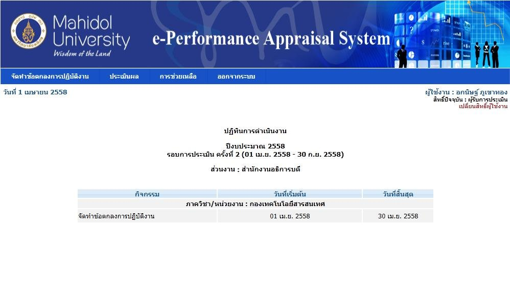
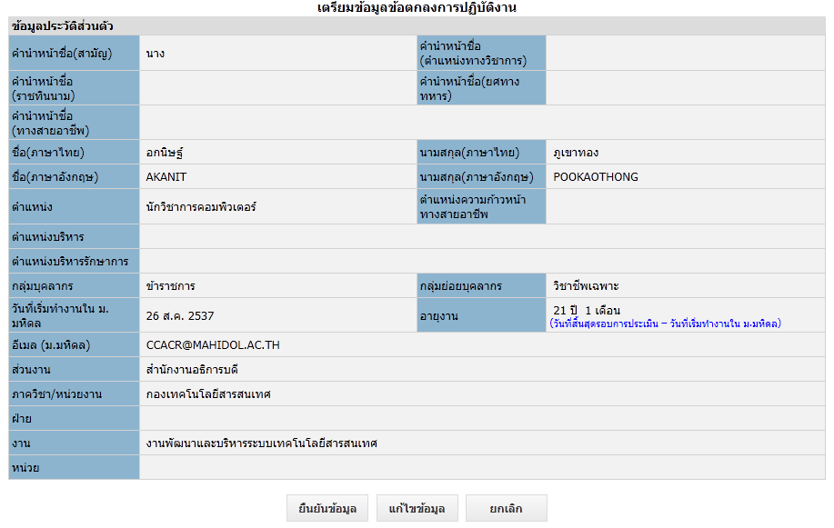
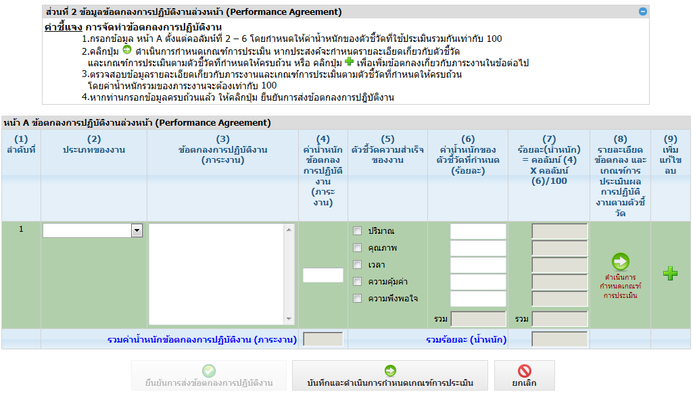
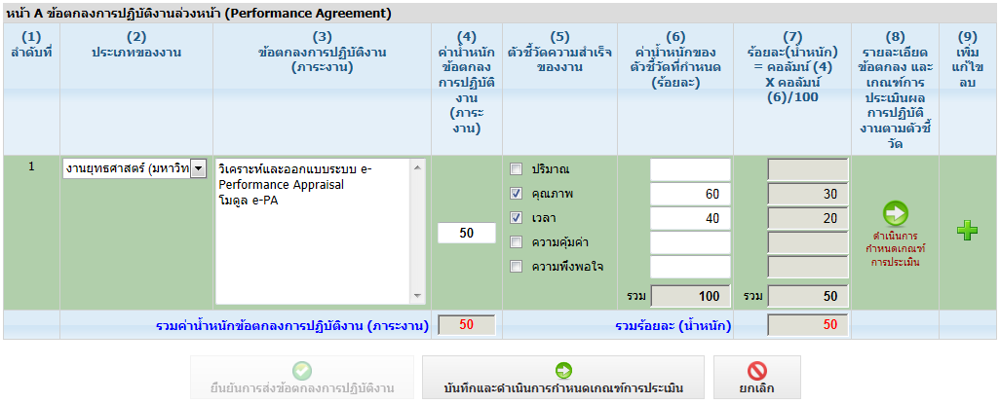

จัดทำข้อตกลงการปฏิบัติงานออนไลน์
หน้าตาโปรแกรม
หน้าหลักของผู้รับการประเมิน — 4 เมนู

จัดทำข้อตกลงการปฏิบัติงาน · ประเมินผล · การช่วยเหลือ · ออกจากระบบ + ตารางปฏิทินรอบ
เมนู “จัดทำข้อตกลง” ใช้หลายจังหวะตามปฏิทิน: จัดทำครั้งแรก / ถูกส่งกลับแก้ / เพิ่มเติมหลังเห็นชอบ / รายงานผลปลายรอบ
บังคับยืนยันประวัติส่วนตัวก่อนกรอก PA

ตารางประวัติ ชื่อ ตำแหน่ง กลุ่มบุคลากร อีเมล ส่วนงาน · ปุ่ม ยืนยันข้อมูล / แก้ไขข้อมูล / ยกเลิก
หัวใจของเล่มนี้: หน้า A และหน้า B

หน้า A ข้อตกลงล่วงหน้า 9 คอลัมน์ คำชี้แจงบนตารางบอกให้น้ำหนักภาระงานรวมเท่ากับ 100

ตัวอย่างในคู่มือ: ประเภท = งานยุทธศาสตร์ (มหาวิทยาลัย), ภาระงาน = ออกแบบระบบ e-PA, น้ำหนัก 50, ติ๊กคุณภาพ 60 + เวลา 40
| คอลัมน์ | ชื่อ | ทำอะไร |
|---|---|---|
| (1) | ลำดับที่ | ระบบใส่ให้ |
| (2) | ประเภทของงาน | dropdown เลือกเอง เช่น งานยุทธศาสตร์ |
| (3) | ข้อตกลง (ภาระงาน) | พิมพ์ข้อความอิสระ |
| (4) | ค่าน้ำหนักภาระงาน | ตัวเลข รวมทั้งฉบับต้องได้ 100 |
| (5) | ตัวชี้วัดความสำเร็จ | ติ๊กได้หลายด้าน: ปริมาณ คุณภาพ เวลา ความคุ้มค่า ความพึงพอใจ |
| (6) | น้ำหนักตัวชี้วัด % | ด้านที่ติ๊กในข้อนั้นรวมต้องได้ 100 |
| (7) | ร้อยละน้ำหนัก | คำนวณอัตโนมัติ = (4)×(6)/100 อ่านอย่างเดียว |
| (8) | รายละเอียด / เกณฑ์ / หลักฐาน | ตอนจัดทำ = ปุ่มไปหน้า B · ตอนรายงานผล = ใส่เอกสารหลักฐาน |
| (9) | เพิ่ม แก้ไข ลบ | สัญลักษณ์ + ดินสอ ถังขยะ ลูกศรกำหนดเกณฑ์ |
หน้า B — เกณฑ์ 5 Scale
กดลูกศรเขียวที่คอลัมน์ (8) จะเปิดหน้า B
- คอลัมน์ (1)–(5) ดึงมาจากหน้า A อ่านอย่างเดียว
- คอลัมน์ (6) คลิก “โปรดระบุ” กรอกรายละเอียดตัวชี้วัดแต่ละด้าน ต้องครบทุกด้านที่ติ๊ก
- คอลัมน์ (7) กรอกเกณฑ์การประเมิน ครบทั้ง 5 ระดับ
- ปุ่ม: ย้อนกลับหน้า A / บันทึกเกณฑ์ (มี Dialog ยืนยัน)
ปุ่มล่างหน้า A สามปุ่ม: ยืนยันการส่งข้อตกลง · บันทึกและกำหนดเกณฑ์ · ยกเลิก
ก่อนส่งจริงมีหน้าพรีวิว 3 ส่วน: ประวัติ · ข้อตกลง · เกณฑ์ แล้วส่งออก Excel พิมพ์ได้
4 จังหวะในรอบ (เมนูเดียวกัน คนละจังหวะ)
ก
จัดทำข้อตกลงครั้งแรก
ยืนยันประวัติ → กรอกหน้า A คอลัมน์ 2–6 → กำหนดเกณฑ์หน้า B → เพิ่มข้อจนน้ำหนักรวม 100 → พรีวิว 3 ส่วน → ส่ง
ข
หัวหน้าส่งกลับแก้ไข
มีไอคอนดูประวัติข้อเสนอแนะ → แก้ตามหมายเหตุหน้า A/B → ส่งใหม่
ค
หลังเห็นชอบแล้วยังเพิ่มเติม/แก้ไข/ยกเลิกได้
ขึ้น Dialog ถามก่อน กันกดพลาด แล้วเข้าหน้า A ชุดเดิม
ง
รายงานผลปลายรอบ
ไม่สร้างข้อใหม่ — ไปกรอกหลักฐานในคอลัมน์ 8 แล้วส่ง พรีวิวเหลือ 2 ส่วน (ประวัติ + ข้อตกลง)
เงื่อนไขที่คู่มือบังคับ
- Login ชื่อ.นามสกุล 3 ตัว · รหัสผิด 3 ครั้ง ระงับ 10 นาที (ต่างจาก UM-01 ที่ 5 ครั้ง / 1 ชั่วโมง)
- ต้องยืนยันประวัติส่วนตัวก่อนเข้าหน้ากรอกข้อตกลง
- น้ำหนักภาระงานทั้งฉบับ = 100 และน้ำหนักตัวชี้วัดในแต่ละข้อ = 100
- หน้า B ต้องครบทุกด้านและครบ 5 Scale
- คอลัมน์ (7) กรอกเองไม่ได้ ระบบคิดให้
- IE ไม่ควรจำรหัสผ่าน มีบทแก้ใน Tools / Internet Options